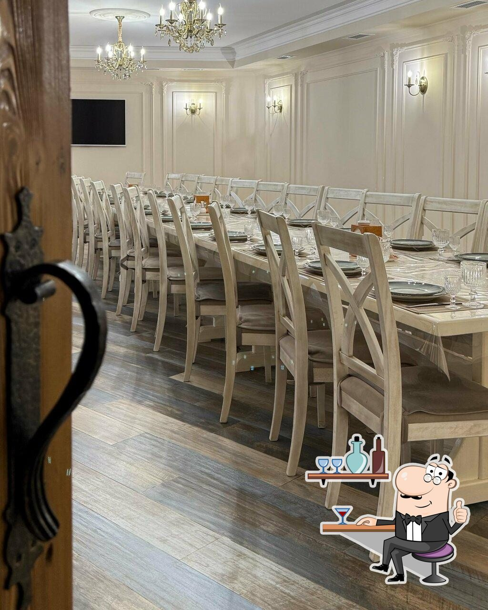

Գյումրի · Ղարսի խճուղի, 8
Հաճելի երեկո։
Լավ
ընկերակցությամբ։
Երկար զրույցների, սիրելի համերի ու առանց առիթի հանդիպումների վայր։
ՀԱՐՑՆԵԼ ԱԶԱՏ ՍԵՂԱՆԻ ՄԱՍԻՆ01Թողեք առօրյա հոգսերը
Zemlyanka-ի մթնոլորտը
Թողեք առօրյա հոգսերը
շեմից այն կողմ։
Փակ սրահներ և բացօթյա տարածք։ Ընտրեք ձեր երեկոյի տրամադրությունը՝ հանգիստ ընթրիք կամ հանդիպում մտերիմների հետ։
Ռեստորանից ճշտեք հարմար սրահը, ազատ ամսաթիվն ու ձեր միջոցառման պայմանները։
ԴԻՏԵԼ ՍՐԱՀՆԵՐԸ
Մանրուքներ, որոնք ամբողջացնում են երեկոն
Հայացք ներսից
Համ։ Լույս։
Միջավայր։
Սեղմեք լուսանկարին՝ խոշորացնելու համար
Լուսանկարները՝ ռեստորանի հանրային էջից։ Աղբյուր
ՀԱՆԴԻՊՈՒՄՆԵՐԻ ԺԱՄԵՐԸԱմեն օր · 10:00—23:00
Տոնական օրերի աշխատանքային ժամերը ճշտեք հեռախոսով։
Տոնական օրերի աշխատանքային ժամերը ճշտեք հեռախոսով։
ՍՈՑԻԱԼԱԿԱՆ ՑԱՆՑԵՐ@zemlyanka_restaurant